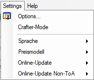

Menu - Settings

Various settings for the program.
The options ...
Call up the options dialog.
Crafter mode
Disables various input to the Crafter. If only one template is to be
created, then this option should not be activated.
Fixed window size
Activate this option if the main window does not fit all the elements. If
there are no problems with changing the size of the main window, this
option does not need to be activated either.
User options
All other entries in this menu are so-called user options. These entries
here are all based on various configuration files in the program
directory, which correspond to the pattern opt_*.xml. At the
moment, there are options to switch the language and the band spell
pricing model. It is possible that there are also entries for the online
update of the item database. To build the configuration files, please
check the developer files.